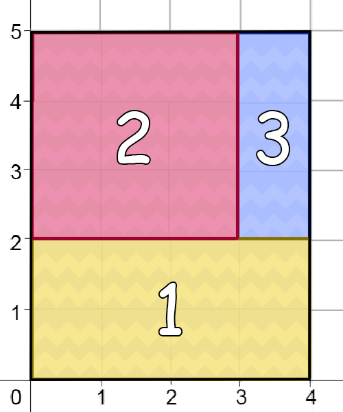
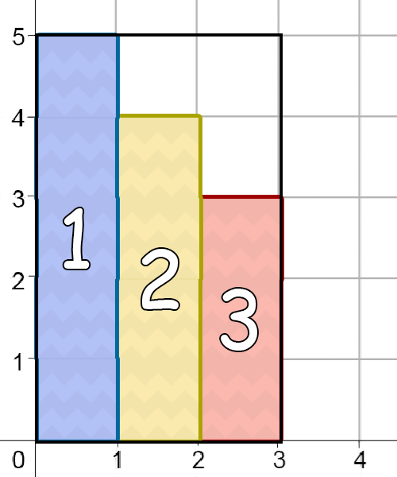

The country of Toki has a territory with the shape of a rectangle. The map of Toki can be represented in the Cartesian coordinate system. Four corner points of the rectangle are at points $(0, 0)$, $(N, 0)$, $(N, M)$, and $(0, M)$.
Pak Dengklek as the Ministry of Defence of Toki wants to split the territory of the country into $K$ territorial defences numbered from $1$ to $K$. The following are the rules of each territory that Pak Dengklek wants.
Pak Dengklek wants you to split the territory of the country with the rules above. Other than that, Pak Dengklek wants the $i$-th defense territory to have an area of $A_i$. You are allowed to disobey this request. However, Pak Dengklek will be happier if you can assign the area of the territorial defence following the area that Pak Dengklek wants.
Suppose that the $i$-th territorial defence that you made has an area of $B_i$. For every territorial defence $i$, Pak Dengklek's happiness value will increase by:
Help Pak Dengklek to determine how to split the territorial defences! If there exists more than one solution, output any of them. You are allowed to exclude part of the Toki territory into any territorial defences. Your score depends on Pak Dengklek's happiness value, following the formula that will be explained in the Scoring section.
This is an "output-only" problem. For each test case, you write the output to a file.
The input files for this problem can be downloaded in the Attachment section at the end of
this problem. Inside the .zip file, there are 2 + 10 input files to solve: pertahanan_contoh_1.in,
pertahanan_contoh_2.in, pertahanan_1.in, pertahanan_2.in,
..., pertahanan_10.in. The sample input (pertahanan_contoh_1.in and
pertahanan_contoh_2.in) are not included in the final score.
For each input file that you solve (you don't have to solve all input files), create an output
file pertahanan_contoh_T.out (for sample input) or pertahanan_T.out,
where T is the test case number. Then, compress all output files into a single .zip file.
If you made any program to help solving this problem, include all of your source codes
into the .zip file, then submit.
The input is given with the following format:
N M K A1 A2 ... AK
$K$ lines: the $i$-th line consists of $4$ integers $x_1, x_2, y_1,$ and $y_2$, which
shows that the corner points of the $i$-th defense territory are at point $(x_1, y_1)$,
$(x_2, y_1)$, $(x_2, y_2)$, and $(x_1, y_2)$. If You do not want to assign area to
the $i$-th defense territory, output -1 -1 -1 -1.
4 5 3 8 9 3
0 4 0 2 0 3 2 5 3 4 2 5
This sample can be illustrated with the following image. The numbers inside each rectangles in the image corresponds to each territorial defence. Since all territorial defences have the same area as what Pak Dengklek wants, therefore Pak Dengklek's happiness value is $3 + 3 + 3 = 9$. Using the formula in the Scoring section, the score achieved by this sample output is $10$.

3 5 4 5 4 3 3
0 1 0 5 1 2 0 4 2 3 0 3 -1 -1 -1 -1
This sample can be illustrated with the following image. The numbers inside each rectangles in the image correspond to territorial defences. Note that in this sample output, the $4$-th territorial defence is not assigned with any area. Moreover, there is part of Toki territory that is not inside any territorial defences. Pak Dengklek's happiness value is $3 + 3 + 3 + 0 = 9$. Using the formula in the Scoring section, the score achieved by this sample output is $5$.

Your output will achieve a score on a test case if your output follows the specified output format that was previously mentioned and follow Pak Dengklek's rule.
If $X$ is Pak Dengklek's total happiness value based on your territorial defences assignment, then your score is:
| Condition | Point |
|---|---|
| $X = 3K$ | $10$ |
| $X < 3K$ | $\lfloor (\frac{X}{K})^2 \rceil$ |
The notation $\lfloor x \rceil$ returns round value of $x$ to the nearest integer. For all inputs, it is guaranteed that there exists an output that achieves a score of $10$.
For all subtasks:
Input files for this problem is available here.